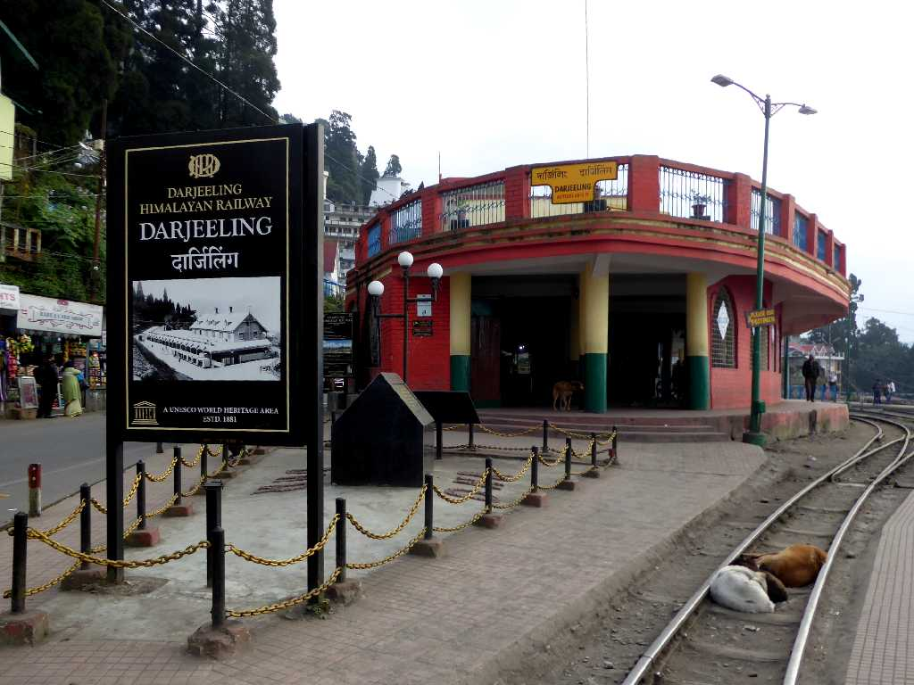
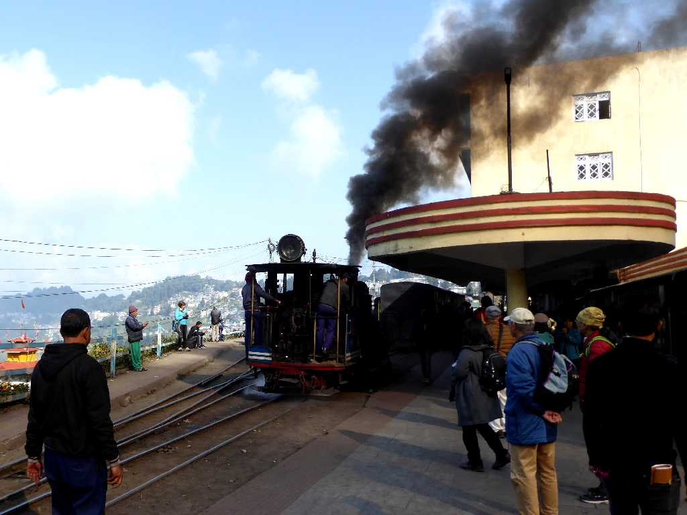
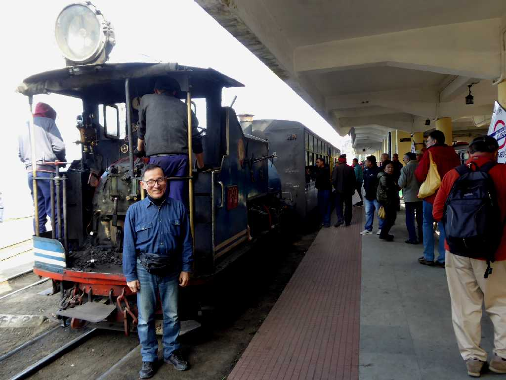
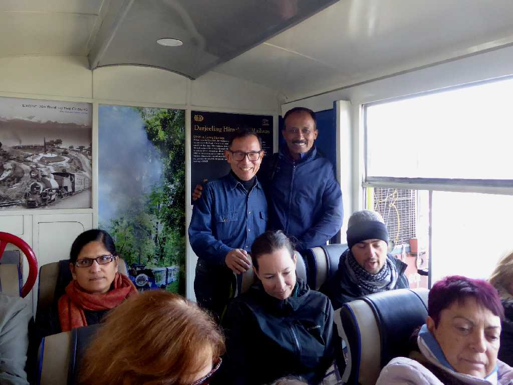
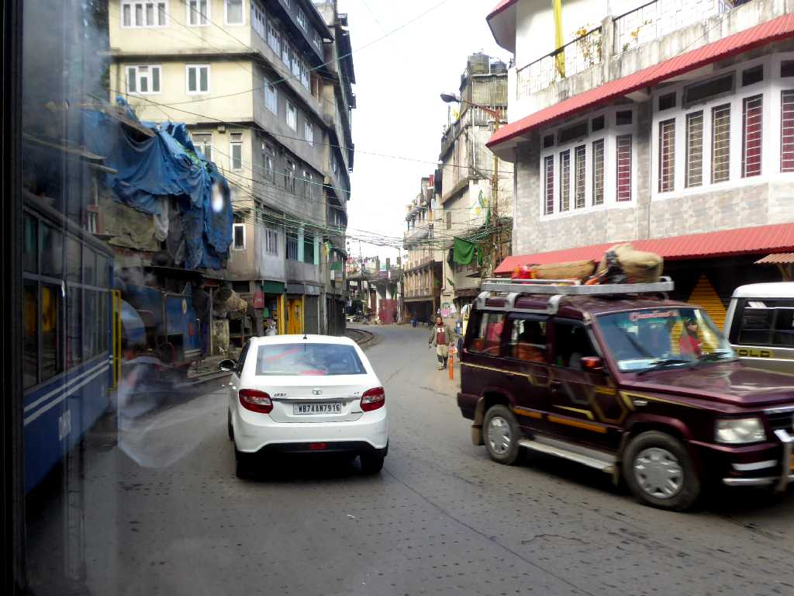
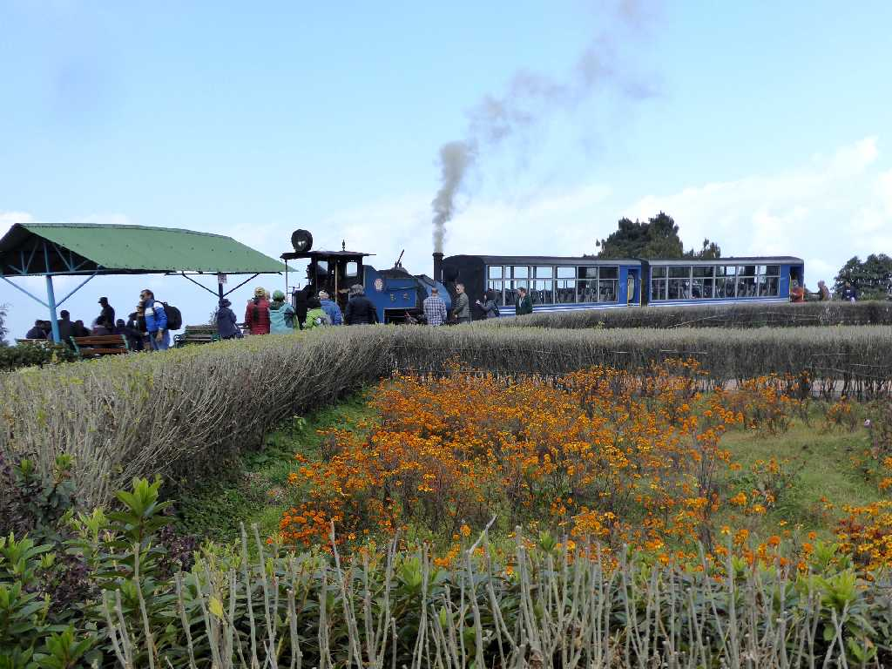
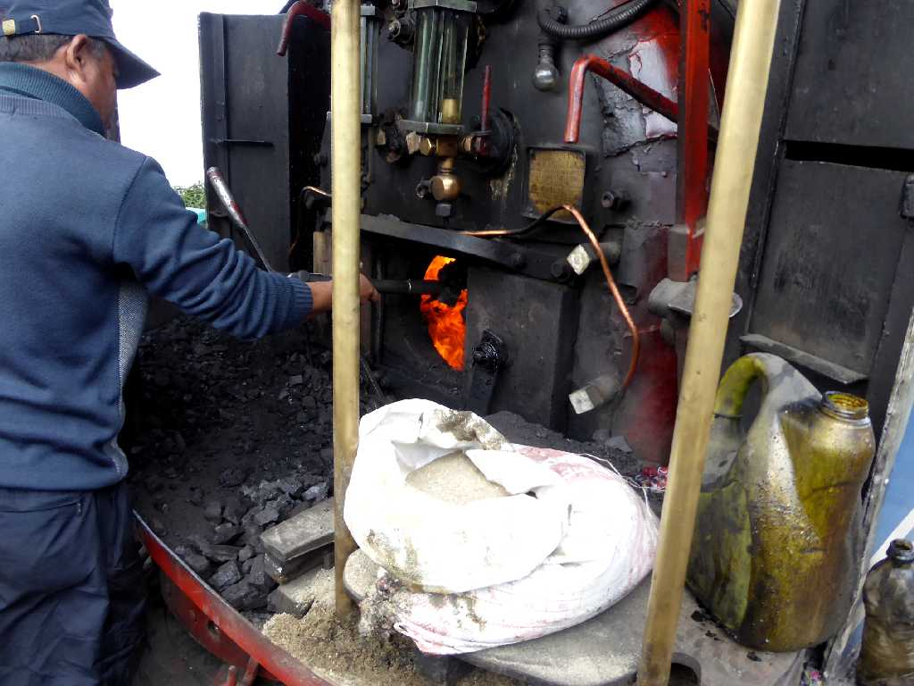
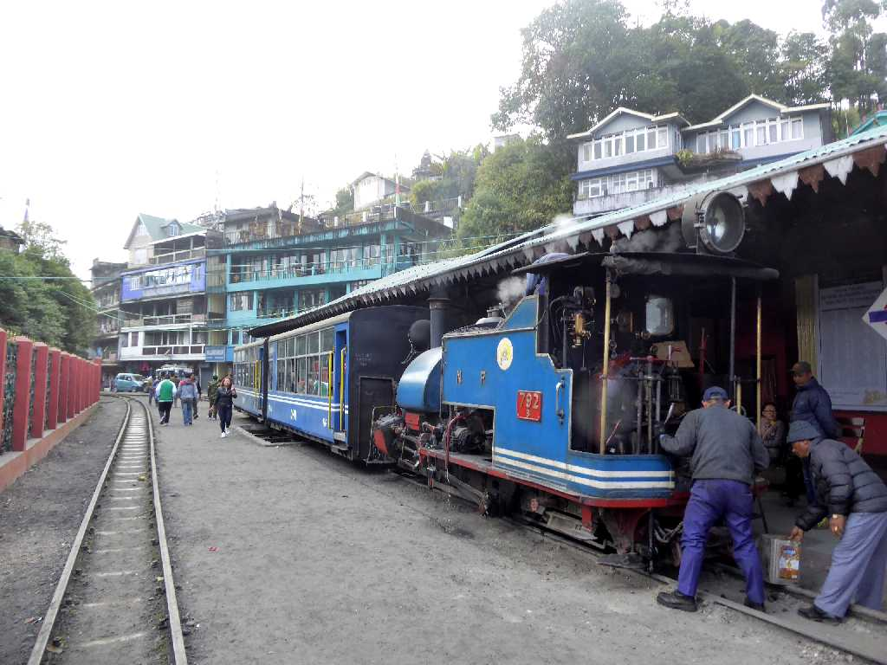
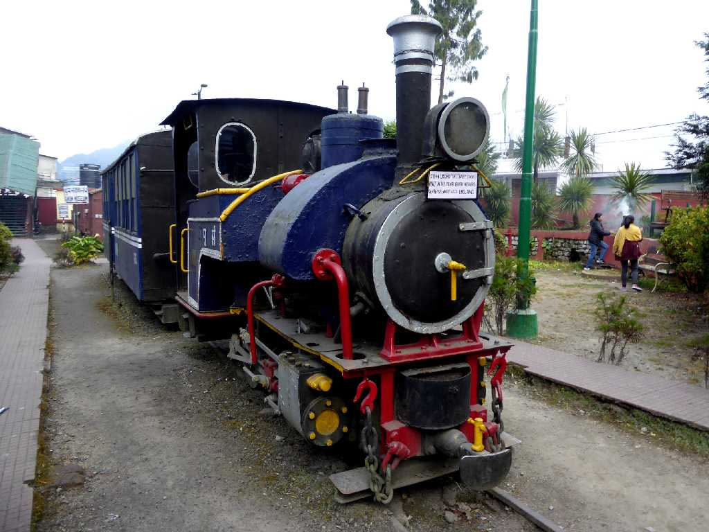

TOY TRAIN Darjeeling Himalayan Railway Station Darjeeling
紅茶の積出を主目的として１８８１年７月３日に開業した２ｆｔ(610mm)ナローゲージのダージリンヒマラヤ鉄道愛称トイトレインに乗車

Steam Locomotive Darjeeling Station
蒸気機関車が牽引する列車に乗車するのは数十年ぶり

November 30 2017 Steam Locomotive Darjeeling Station
アジア最古の登山鉄道でカーブが多く２ｆｔのナローケージを採用している

November 30 2017 Passenger Car

Running on Darjeeling Street
煤を掃いながらの乗車も数十年ぶり

Batasia Loop

Steam Locomotive
幼少時代に国内旅行で観られた石炭をくべる懐かしい光景

Ghum Station
標高２,２５５ｍにあるグーム駅はダージリンヒマラヤ鉄道の最高地点になる

BABY SIVOK Oldest Steam Locomotive of 1881
開業当時の蒸気機関車 交換部品は今も特設工場で作られ運行を維持して来ている